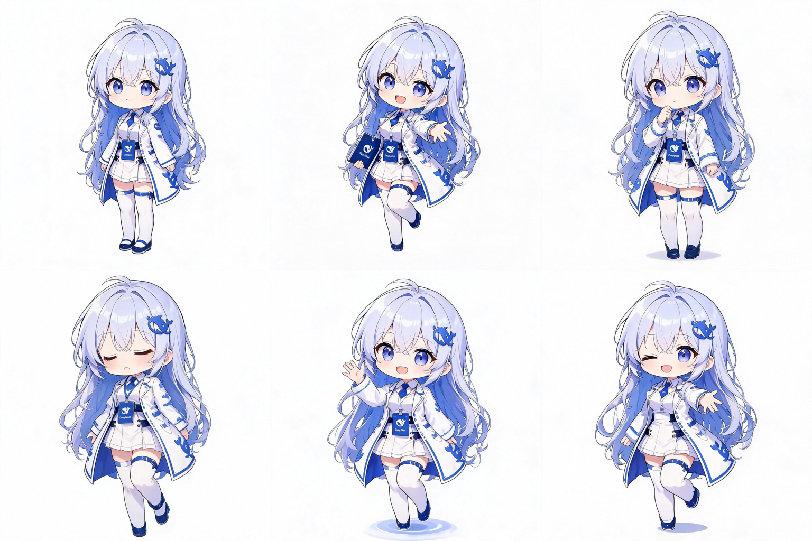

DeepSeekPet · 立绘资产线
AI 娘立绘：样图分类与生产计划
47 组样图已逐张归类到模型；生图管线跑通并完成第一批（DeepSeek 六情绪）。资产一律自产，样图只作风参考。
2026-09-21 ｜ 生成方式：Seedream 图生图（参考图 → 同角色不同情绪）｜ 输出：2048×2048
01样图分类结果（按模型）
| 模型 | 样图数 | 形象要点（识图结果） | 参考优先级 |
|---|
| DeepSeek | 12 | 鲸鱼发饰 + 女仆/制服白蓝配色（多为白底，含三视图与表情集） | 高（重点） |
| Claude | 5 | 白紫配色、医生袍、羽饰，气质温和 | 高 |
| Grok | 5 | 黑红哥特、xAI 标识、坐姿较多 | 高 |
| GPT / ChatGPT | 5 | 绿/银白两套配色；其一含完整三视图 + 表情集 | 高 |
| Gemini | 4 | 蓝紫星河、星形发饰 | 中 |
| Llama | 2 | 银白兽耳、连帽外套、紫裙 | 中 |
| Qwen / GLM / 豆包 / 混元 / Mistral / 星火 / MiniMax / 文心 | 各 1 | 各有品牌配色（紫、实验袍、机能黑青等） | 中 |
| 未标注 / 综合海报 / 无关 | 4 | 多模型合影海报、课表截图等 | 不作角色参考 |
完整逐张清单见 样图分类清单.md（含哈希前缀，便于回溯原图）。分类为**视觉识别推断**，需人工复核。
02第一批成品：DeepSeek 六情绪

DeepSeek 六情绪（2×3）：平静 / 开心 / 思考 / 打瞌睡 / 挥手 / 眨眼 —— 质检结论「可直接用」
| 检查项 | 结果 |
|---|
| 角色一致性 | ✓ 发色发饰、服装配色高度一致（个别图多了一个文件夹道具，可选剔除） |
| 构图 | ✓ 六张均为全身、人物大小统一 |
| 表情对应 | ✓ 6/6 与要求一致 |
| 缺陷 | ✓ 无多手多脚、无比例失调 |
| 背景 / 水印 | ✓ 纯白背景、无文字水印（右下角非白像素 0.0%） |
| 尺寸 | ✓ 全部 2048×2048 |
03管线与参数（实测得出）
| 项 | 实测结论 |
|---|
| 接口能力 | 仅接受 query + image（参考图）—— 没有尺寸/水印/seed 参数 |
| 出图尺寸 | 提示词写"正方形"即得 2048×2048（无需参数） |
| 一致性策略 | 同一参考图 + 统一提示词模板（只改表情句）+ 小批量质检挑选 |
| 背景 | 提示词要求纯白后，四角像素 249~255；先不做抠图（按用户要求，后续需要再处理） |
| 水印 | 首批 6 张未发现；首张测试图右下角有一处疑似痕迹 → 每张自动做角落检测作为护栏 |
| 限流 | 每张之间留 4 秒间隔，6/6 无失败 |
04背景统一与三种版本（2026-09-21 按用户要求定稿）
| 规则 | 内容 | 为什么 |
|---|
| 框架不变 | 保留角色的识别特征：发饰、服装框架、主色配色不大改，只动细节与表情 | 变了就与大家刷视频见到的形象对不上，反而怪 |
| 统一 Q 版 | 全部使用 Q 版比例 | 现实画风太高太大、裟不下 |
| 统一背景 | 所有图背景色完全一致（先纯白，再统一转绿幕） | 背景不统一时，PPT 里做背景色替换会处理不完、留残余 |
| 版本 | 用途 | 现状 |
|---|
| 白底（原图） | 当普通贴图最自然 | ✓ 背景已压成纯白 #FFFFFF（原图备份 raw/） |
| 绿幕（*_chroma.png） | 推荐：WPS/PPT“设置透明色”一键去底，干净且不影响角色 | ✓ 背景纯净均匀（复检合格） |
| 透明（*_alpha.png） | 直接叠任意背景，无需抠图 | △ 深色底上仍有轻微白边（已从“非常明显”降到“柔和浅晕”） |
抠图管线迭代记录（为什么长成这样）
v1 “接近白就抠” → 把角色自己的白大褂也抠成半透明 ✗
v2 改成“从画面边缘洪水填充” → 角色保住了，但容差太小：周围淡阴影没填净、留一圈白边 ✗
v3 容差放大 + 掩膜外扩 1px → 绿幕干净了，深色底上仍见白边 ✗
v4（当前）：掩膜再向内收 2px + 边缘去白（按 alpha 反预乘去掉混入的白）+ 0.5px 羽化 → 白边明显减轻
建议用法
WPS 里做背景色替换时，用绿幕版（*_chroma.png）最稳：绿色统一、角色身上不含纯品绿，一键设置透明色就干净；
透明版继续精修到暗底无痕后再当主力。
05下一步生产计划
- 第一轮（建议先做）：DeepSeek（已完成 ✓）+ Claude + Grok + GPT + Gemini 各 6 情绪 → 约 30 张，验证不同模型的画风稳定性。
- 第二轮：其余模型（Llama / Qwen / GLM / 豆包 / 混元 / Mistral / 星火 / MiniMax / 文心）各 6 情绪 → 约 54 张。
- 第三轮（可选，凑"几百张"）：给重点模型加姿势变体与多套服装（例如 DeepSeek 女仆款/制服款 × 6 情绪）。
待你拍板
① 是否按"每模型 6 情绪"先铺一轮（约 84 张）？
② 风格统一用现在这种 Q 版，还是要半写实？
③ 是否需要我顺手做一版"去背景透明 PNG"来接桌宠现有渲染路径（现在先不做）。
版权与来源（必须记住）
你给的样图多来自网络、属他人作品 → 我们只把它们当风格与角色设计参考，不直接裁切或搬用成品图像；所有进入产品的立绘都由我们自产生成（当前做法即是）。另外样图里大量"三视图 + 表情集"信息量很高，用来写提示词最有效。
06夜间续跑（19:05–20:38）：姿势/服装变体扩产到 199 张
| 项 | 结果 |
|---|
| 14 模型原图总数 | 193（+ 并行会话另出 `deepseek_pose` 6 张 = 199），≈200 目标达成 |
| Wave2 变体 | ✓ deepseek / claude / gpt / gemini / grok 各 12 张（6 姿势 + 6 服装） |
| Wave3 变体 | ✓ llama / qwen / glm / doubao / hunyuan / mistral / spark / minimax / wenxin 各 6 张（姿势） |
| 出厂三道 | ✓ 199 张全部具有 白底 / 绿幕(_chroma) / 透明(_alpha)，角落水印检测 0.00% |
| 总览图 | ✓ 重建 `输出\立绘总览_全14模型.png`，14 行 × 6 列、缺图 0 |
| 混元行 | ✓ 锚定法（以自生成 `hunyuan_idle.png` 为唯一身份基准）救回，六张发色收敛，不再「换人」 |
| 累计积分 | ≈15,540 / 40,000（约 24,460 余额） |
独立复检结论（内置识图 + row_consistency.py）
hunyuan 5/5 可用 ✓；doubao 4/5（idle/thinking/waving 右腿有黑色环状色块，建议只重做 3 张）；
mistral、wenxin 各 3/5（无换人，但除 happy 外表情趋同）；spark 可用 ✓（此前 0.684 的担忧不成立）；
deepseek / gemini 变体 12 张角色完全统一，仅 run / sit 底部轻微裁切。
待办（未做，非阻塞）
① maid 修正 4 张（claude/gpt/gemini/grok，已备好 `job_*_maid_fix.json`，≈280 积分）；
② doubao 腿部色块 3 张；③ mistral/wenxin 表情区分度（属「可用」级，可不做）。